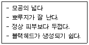
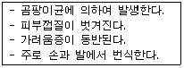

미용사(피부) (2009-09-27 기출문제)
1과목: 피부미용학
1. 클렌징 시술 준비과정의 유의사항과 가장 거리가 먼 것은?
- 고객에게 가운을 입히고 고객이 액세서리를 제거하여 보관하게 한다.
- 터번은 귀가 겹쳐지지 않게 조심한다.
- 깨끗한 시트와 중간 타월로 준비된 침대에 눕힌 다음 큰 타월이나 담요로 덮어준다.
- 터번이 흘러내리지 않도록 핀셋으로 다시 고정시킨다.
(정답률: 85%)

2. 지성 피부를 위한 피부관리 방법은?
- 토너는 알코올 함량이 적고 보습기능이 강화된 제품을 사용한다.
- 클렌저는 유분기 있는 클렌징크림을 선택하여 사용한다.
- 동/식물성 지방 성분이 함유된 음식을 많이 섭취한다.
- 클렌징 로션이나 산뜻한 느낌의 클렌징 젤을 이용하여 메이크업을 지운다.
(정답률: 80%)
3. 고객이 처음 내방하였을 때 피부관리에 대한 첫 상담과정에서 고객이 얻는 효과와 가장 거리가 먼 것은?
- 전 단계의 피부관리 방법을 배우게 된다.
- 피부관리에 대한 지식을 얻게 된다.
- 피부관리에 대한 경계심이 풀어지며 심리적으로 안정된다.
- 피부관리에 대한 긍정적이고 적극적인 생각을 가지게 된다.
(정답률: 81%)
4. 왁스 시술에 대한 내용 중 옳은 것은?
- 제모하기 적당한 털의 길이는 2㎝ 이다.
- 온 왁스의 경우 왁스는 제모 실시 직전에 데운다.
- 왁스를 바른 위에 머절린(부직포)은 수직으로 세워 떼어낸다.
- 남아있는 왁스의 끈적임은 왁스제거용 리무버로 제거한다.
(정답률: 67%)
5. 눈썹이나 겨드랑이 등과 같이 연약한 피부의 제모에 사용하며, 부직포를 사용하지 않고 체모를 제거할 수 있는 왁스(wax) 제모 방법은?
- 소프트(Soft) 왁스 법
- 콜드(Cold) 왁스 법
- 물(Water) 왁스 법
- 하드(Hard) 왁스 법
(정답률: 67%)
6. 워쉬오프 타입의 팩이 아닌 것은?
- 크림 팩
- 거품 팩
- 클레이 팩
- 젤라틴 팩
(정답률: 64%)
7. 아래 설명과 가장 가까운 피부타입은?

- 지성피부
- 민감피부
- 건성피부
- 정상피부
(정답률: 92%)
8. 피부미용의 개념에 대한 설명 중 틀린 것은?
- 피부미용이라는 명칭은 독일의 미학자 바움가르덴(Baum garten)에 의해 처음 사용되었다.
- Cosmetic이란 용어는 독일어의 Kosmein에서 유래되었다.
- Esthetique란 용어는 화장품과 피부관리를 구별하기 위해 사용된 것이다.
- 피부미용이라는 의미로 사용되는 용어는 각 나라마다 다양하게 지칭되고 있다.
(정답률: 64%)
9. 피부 관리 시술단계가 옳은 것은?
- 클렌징-피부분석-딥클렌징-매뉴얼 테크닉-팩-마무리
- 피부분석-클렌징-딥클렌징-매뉴얼 테크닉-팩-마무리
- 피부분석-클렌징-매뉴얼 테크닉-딥클렌징-팩-마무리
- 클렌징-딥클렌징-팩-매뉴얼 테크닉-마무리-피부분석
(정답률: 79%)
10. 습포에 대한 설명으로 맞는 것은?
- 피부미용 관리에서 냉습포는 사용하지 않는다.
- 해면을 사용하기 전에 습포를 우선 사용한다.
- 냉습포는 피부를 긴장시키며 진정효과를 위해 사용한다.
- 온습포는 피부미용 관리의 마무리 단계에서 피부 수렴효과를 위해 사용한다.
(정답률: 81%)
11. 다음 중 눈 주위에 가장 적합한 매뉴얼 테크닉의 방법은?
- 문지르기
- 주무르기
- 흔들기
- 쓰다듬기
(정답률: 77%)
12. 딥클렌징의 효과에 대한 설명으로 틀린 것은?
- 면포를 연화시킨다.
- 피부 표면을 매끈하게 해주고 혈색을 맑게 한다.
- 클렌징의 효과가 있으며 피부의 불필요한 각질세포를 제거한다.
- 혈액순환촉진을 시키고 피부조직에 영양을 공급한다.
(정답률: 63%)
13. 매뉴얼 테크닉의 주의 사항이 아닌 것은?
- 동작은 피부결 방향으로 한다.
- 청결하게 하기 위해서 찬물에 손을 깨끗이 씻은 후 바로 마사지 한다.
- 시술자의 손톱은 짧아야 한다.
- 일광으로 붉어진 피부나 상처가 난 피부는 매뉴얼 테크닉을 피한다.
(정답률: 94%)
14. 관리방법 중 수요법(water therapy, hydrotherapy)시 지켜야 할 수칙이 아닌 것은?
- 식사 직후에 행한다.
- 수요법은 대개 5분에서 30분까지가 적당하다.
- 수요법 전에는 잠깐 쉬도록 한다.
- 수요법 후에는 주스나 향을 첨가한 물이나 이온음료를 마시도록 한다.
(정답률: 88%)
15. 딥클렌징 방법이 아닌것은?
- 디스인크러스테이션
- 효소필링
- 브러싱
- 이온토포레시스
(정답률: 69%)
16. 피부관리 시 매뉴얼테크닉을 하는 목적과 가장 거리가 먼 것은?
- 정신적 스트레스 경감
- 혈액순환 촉진
- 신진대사 활성화
- 부종 감소
(정답률: 64%)
17. 콜라겐 벨벳마스크는 어떤 타입이 주로 사용되는가?
- 시트 타입
- 크림 타입
- 파우더 타입
- 겔 타입
(정답률: 74%)
18. 셀룰라이트 관리에서 중점적으로 행해야 할 관리방법은?
- 근육의 운동을 촉진시키는 관리를 집중적으로 행한다.
- 림프순환을 촉진시키는 관리를 한다.
- 피지가 모공을 막고 있으므로 피지배출 관리를 집중적으로 행한다.
- 한선이 막혀 있으므로 한선관리를 집중적으로 행한다.
(정답률: 73%)
19. 원주형 세포가 단층적으로 이어져 있으며 각질형성세포와 색소형성세포가 존재하는 피부세포층은?
- 기저층
- 투명층
- 각질층
- 유극층
(정답률: 82%)
20. 산소 라디칼 방어에서 가장 중심적인 역할을 하는 효소는?
- FDA
- SOD
- AHA
- NMF
(정답률: 56%)
2과목: 피부학 및 해부생리학
21. 다음 중 피부의 기능이 아닌 것은?
- 보호작용
- 체온조절작용
- 감각작용
- 순환작용
(정답률: 67%)
22. 내인성 노화가 진행될 때 감소현상을 나타내는 것은?
- 각질층 두께
- 주름
- 피부처짐 현상
- 랑게르한스세포
(정답률: 68%)
23. 다음 중 주름살이 생기는 요인으로 가장 거리가 먼 것은?
- 수분의 부족상태
- 지나치게 햇빛(sunlight)에 노출되었을 때
- 갑자기 살이 찐 경우
- 과도한 안면운동
(정답률: 85%)
24. 콜레스테롤의 대사 및 해독작용과 스테로이드 호르몬의 합성과 관계있는 무과립 세포는?
- 조면형질내세망
- 골면형질내세망
- 용해소체
- 골기체
(정답률: 48%)
25. 다음 내용과 가장 관계있는 것은?

- 농가진
- 무좀
- 홍반
- 사마귀
(정답률: 92%)
26. 아포크린한선의 설명으로 틀린 것은?
- 아포크린한선의 냄새는 여성보다 남성에게 강하게 나타난다.
- 땀의 산도가 붕괴되면서 심한 냄새를 동반한다.
- 겨드랑이, 대음순, 배꼽주면에 존재한다.
- 인종적으로 흑인이 가장 많이 분비한다.
(정답률: 63%)
27. 다음 중 가장 이상적인 피부의 pH범위는?
- pH 3.5 ~ 4.5
- pH 5.2 ~ 5.8
- pH 6.5 ~ 7.2
- pH 7.5 ~ 8.2
(정답률: 69%)
28. 성장기에 있어 뼈의 길이 성장이 일어나는 곳을 무엇이라 하는가?
- 상지골
- 두개골
- 연지상골
- 골단연골
(정답률: 68%)
29. 섭취된 음식물중의 영양물질을 산화시켜 인체에 필요한 에너지를 생성해 내는 세포 소기관은?
- 리보소옴
- 리소조옴
- 골지체
- 미토콘드리아
(정답률: 65%)
30. 자율신경의 지배를 받는 민무늬근은?
- 골격근(skeletal muscle)
- 심근(cardiac muscle)
- 평활근(smooth muscle)
- 승모근(trapezius muscle)
(정답률: 68%)
3과목: 화장품학
31. 인체 내의 화학물질 중 근육 수축에 주로 관여하는 것은?
- 액틴과 미오신
- 단백질과 칼슘
- 남성호르몬
- 비타민과 미네랄
(정답률: 57%)
32. 혈관의 구조에 관한 설명 중 옳지 않은 것은?
- 동맥은 3층 구조이며 혈관 벽이 정맥에 비해 두껍다
- 동맥은 중막인 평활근 층이 발달해 있다.
- 정맥은 3층 구조이며 혈관벽이 얇으며 판막이 발달해 있다.
- 모세혈관은 3층 구조이며 혈관벽이 얇다.
(정답률: 50%)
33. 소화선(소화샘)의로써 소화액을 분비하는 동시에 호르몬을 분비하는 혼합선(내/외분비선)에 해당하는 것은?
- 타액선
- 간
- 담낭
- 췌장
(정답률: 68%)
34. 신경계의 기본세포는?
- 혈액
- 뉴우런
- 미토콘드리아
- DNA
(정답률: 69%)
35. 고주파 피부미용기기의 사용방법 중 간접법에 대한 설명으로 옳은 것은?
- 고객의 얼굴에 적합한 크림을 바르고 그 위에 전극봉으로 마사지한다.
- 얼굴에 적합한 크림을 바르고 손으로 마사지한다.
- 고객의 얼굴에 마른 거즈를 올린 후 그 위를 전극봉으로 마사지한다.
- 고객의 손에 전극봉을 잡게 한 후 얼굴에 마른거즈를 올리고 손으로 눌러준다.
(정답률: 34%)
36. 피지, 연포가 있는 피부 부위의 우드램프(wood lamp)의 반응 색상은?
- 청백색
- 진보라색
- 암갈색
- 오렌지색
(정답률: 78%)
37. 칼라테라피 기기에서 빨상 색광의 효과와 가장 거리가 먼 것은?
- 혈액순환 증진, 세포의 활성화, 세포 재생활동
- 소화기계 기능강화, 신경자극, 신체 정화작용
- 지루성 여드름, 혈액순환 불량 피부관리
- 근조직 이완, 셀룰라이트 개선
(정답률: 49%)
38. 클렌징이나 딥클렌징 단계에서 사용하는 기기와 가장 거리가 먼 것은?
- 베포라이저
- 브러싱머신
- 진공 흡입기
- 확대경
(정답률: 75%)
39. 전류에 대한 내용이 틀린 것은?
- 전하량의 단위는 쿨롱으로 1쿨롱은 도선에 1V의 전압이 걸렸을 때 1초 동안 이동하는 전하의 양이다.
- 교류전류란 전류흐름의 방향이 시간에 따라 주기적으로 변하는 전류이다
- 전류의 세기는 도선의 단면을 1초 동안 흘러간 전하의 양으로서 단위는 A(암페어)이다.
- 직류전동기는 속도조절이 자유롭다.
(정답률: 45%)
40. 이온에 대한 설명으로 옳지 않은 것은?
- 양전하 또는 음전하를 지닌 원자를 말한다.
- 증류수는 이온수에 속한다.
- 원소가 전자를 잃어 양이온이 되고, 전자를 얻어 음이온이 된다.
- 양이온과 음이온의 결합을 이온결합이라 한다.
(정답률: 56%)
4과목: 피부미용기기학
41. 향수의 구비요건이 아닌 것은?
- 향에 특징이 있어야 한다.
- 향이 강하므로 지속성이 약해야 한다.
- 시대성에 부합하는 향이어야 한다.
- 향의 조화가 잘 이루어져야 한다.
(정답률: 86%)
42. 계면활성제에 대한 설명 중 잘못된 것은?
- 계면활성제는 계면을 활성화시키는 물질이다.
- 계면활성제는 친수성기와 친유성기를 모두 소유하고 있다.
- 계면활성제는 표면장력을 높이고 기름을 유화시키는 등의 특징을 가지고 있다.
- 계면활성제는 표면활성제라고도 한다.
(정답률: 45%)
43. 다음 중 기초화장품의 필요성에 해당되지 않는 것은?
- 세정
- 미백
- 피부정돈
- 피부보호
(정답률: 77%)
44. 아하(AHA)의 설명이 아닌 것은?
- 각질제거 및 보습기능이 있다.
- 글리콜릭산, 젖산, 사과산, 주석산, 구연산이 있다.
- 알파 하이드록시카프로익에시드(Alpha hydroxycaproic acid)의 약어이다
- 피부와 점막에 약간의 자극이 있다.
(정답률: 52%)
45. 화장품과 의약품의 차이를 바르게 정의한 것은?
- 화장품의 사용목적은 질병의 치료 및 진단이다.
- 화장품은 특정부위만 사용 가능하다
- 의약품의 사용대상은 정상적인 상태인 자로 한정되어 있다.
- 의약품의 부작용은 어느 정도 까지는 인정된다.
(정답률: 62%)
46. 비누의 제조방법 중 지방산의 글리세린에스테르와 알카리를 함께 가열하면 유지가 가수 분해되어 비누와 글리세린이 얻어지는 방법은?
- 중화법
- 검화법
- 유화법
- 화학법
(정답률: 38%)
47. 샤워 코롱(Shower cologne)이 속하는 분류는?
- 세정용 화장품
- 메이크업용 화장품
- 모발용 화장품
- 방향용 화장품
(정답률: 83%)
48. 다음 중 동물과 전염병의 병원소로 연결이 잘못된 것은?
- 소 - 결핵
- 쥐 - 말라리아
- 돼지 - 일본뇌염
- 개 - 공수병
(정답률: 54%)
49. 다음 중 식품의 혐기성 상태에서 발육하여 신경계 증상이 주 증상으로 나타는 것은?
- 살모넬라증 식중독
- 보툴리누스균 식중독
- 포도상구균 식중독
- 장염비브리오 식중독
(정답률: 67%)
50. 전염병예방법상 제 1군 전염병에 속하는 것은?
- 한센병
- 폴리오
- 일본뇌염
- 파라티푸스
(정답률: 52%)
5과목: 공중위생학
51. 한 지역이나 국가의 공중보건을 평가하는 기초자료로 가장 신뢰성 있게 인정되고 있는 것은?
- 질병이환율
- 영아사망율
- 신생아사망률
- 조사망률
(정답률: 80%)
52. 다음 중 음료수 소독에 사용되는 소독 방법과 가장 거리가 먼 것은?
- 염소소독
- 표백분 소독
- 자비소독
- 승홍액 소독
(정답률: 55%)
53. 보통 상처의 표면에 소독하는데 이용하며 발생기 산소가 강력한 산화력으로 미생물을 살균하는 소독제는?
- 석탄산
- 과산화수소수
- 크레졸
- 에탄올
(정답률: 78%)
54. 알코올 소독의 미생물 세포에 대한 주된 작용기전은?
- 할로겐 복합물형성
- 단백질 변성
- 효소의 완전 파괴
- 균체의 완전 융해
(정답률: 64%)
55. 자비소독에 관한 내용으로 적합하지 않은 것은?
- 물에 탄산나트륨을 넣으면 살균력이 강해진다.
- 소독할 물건은 열탕 속에 완전히 잠기도록 해야 한다.
- 100℃에서 15~20분간 소독한다.
- 금속기구, 고무, 가죽의 소독에 적합하다.
(정답률: 69%)
56. 공중위생영업소의 위생관리수준을 향상시키기 위하여 위생서비스 평가계획을 수립하는 자는?
- 대통령
- 보건복지가족부장관
- 시.도지사
- 공중위생관련협회 또는 단체
(정답률: 54%)
57. 신고를 하지 아니하고 영업소의 소재를 변경한 때 1차 위반 시의 행정처분 기준은?(오류 신고가 접수된 문제입니다. 반드시 정답과 해설을 확인하시기 바랍니다.)
- 영업장 폐쇄명령
- 영업정지 6월
- 영업정지 3월
- 영업정지 2월
(정답률: 57%)
58. 이·미용업의 영업신고를 하지 아니하고 업소를 개설한 자에 대한 법적 조치는?
- 200만원 이하의 과태료
- 300만원 이하의 벌금
- 6월 이하의 징역 또는 500만원 이하의 벌금
- 1년 이하의 징역 또는 1천만원 이하의 벌금
(정답률: 58%)
59. 다음 중 법에서 규정하는 명예공중위생감시원의 위촉대상자가 아닌 것은?
- 공중위생관련 협회장이 추천하는 자
- 소비자 단체장이 추천하는 자
- 공중위생에 대한 지식과 관심이 있는 자
- 3년 이상 공중위생 행정에 종사한 경력이 있는 공무원
(정답률: 45%)
60. 소독을 한 기구와 소독을 하지 아니한 기구를 각각 다른 용기에 넣어 보관하지 아니한 때에 대한 2차 위반 시의 행정처분 기준에 해당하는 것은?
- 경고
- 영업정지 5일
- 영업정지 10일
- 영업장 폐쇄명령
(정답률: 51%)